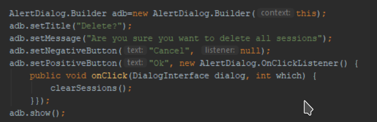
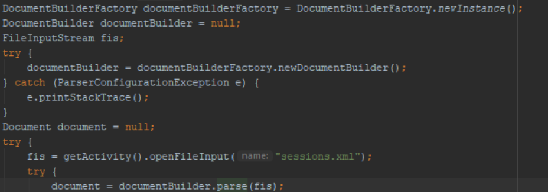
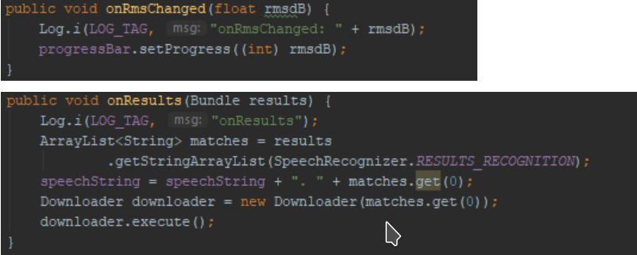
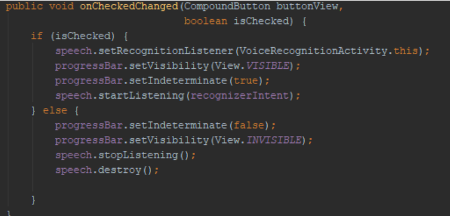
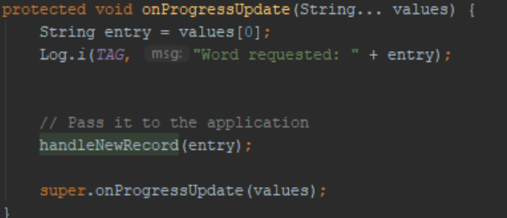
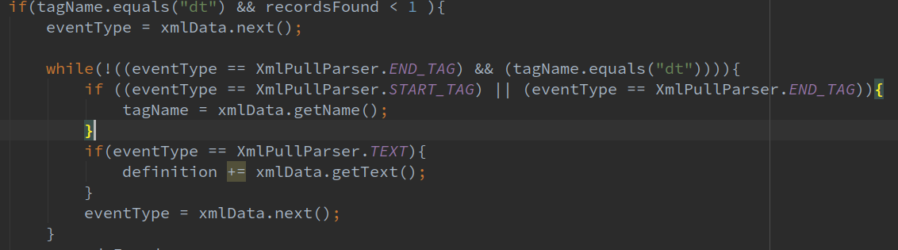

Nadim Edde Gomez
In this section we provide details on the design of our solution from a technical point of view. We will explain our system diagram, the design patterns that we used as well as our method for data storage.
The diagram above shows the final iteration of our system architecture. The system has three main components: The phone, the glasses and a backend online API. As can be seen in the diagram, there is minimal communication going out of the phone application. This design decision was made in order to reduce a risk of data leakage as we are dealing with confidential patient data. This is one of the primary reasons that we opted for local file storage and that we are using the in-built android speech to text functionality.
The phone app makes http get requests to the online API that returns dictionary data on a word. The phone can be connected to the glasses via bluetooth in order to use them as an external display.
Throughout the application the builder design pattern has been used to create prompt boxes that can be modified using various method essentially allowing them to be freely formed for the situation at hand. Here is an example:
Initially the alert box is just comprised of a blank slate which then can be customised for a particular prompt. For this basic dialog box we include a description of the action as well as two options that they can take. This freedom and flexibility prevents us from having to create a new response system using buttons and textboxes which takes much longer and can also result in inconsistencies.
When manipulating XML files we used two classes with the factory design pattern. The first one is the DocumentBuilderFactory class which allows use to create a parser that can make DOM object trees from XML documents. This tree can then be manipulated while still maintaining the XML format which is very useful when updating a text file if we want to add or remove a session/favorited word.
We then use another factory class which is the TransformerFactory which allows the creation of Transformer objects. In our case, the Transformer Object is used to update our XML files by using the originally saved XML file as the source and the new tree what we built using the DocumentBuilderFactory class as the new result.
The observer pattern is actually quite common in Android as OnClickListeners use an implementation of this. However we also have the observer pattern for both our bluetooth connection to our glasses as well as the voice recognition component.
For the voice recognition, an intent is used which is sent every time the SpeechRecognizer gets anyform of an update. This can be partially converted voice input, fully converted input or even when the volume of the input changes. We then have to create an observer which can identify these changes and make appropriate decisions with the data. For example if the user starts speaking, we should update the volume bar or if a sentence has been fully converted:
We also have the same thing with our bluetooth component on the smart glasses which wait for an update from the smartphone application for when a new word has been found or if a definition needs to be displayed.
We use the singleton design pattern with a few modifications so that there is only one instance of the SpeechRecognizer class. This is to ensure that if the user is not recording then the class needs to be destroyed to prevent it from being exploited in anyway. This also prevents multiple hanging instances being created resulting in larger battery drains. This results in the class’ lifespan being tied to the on/off button in the session menu:
In our XML pull parser for the definition retrieval (found in the VoiceRecognitionActivity) we have used asynchronous tasks in order to make sure that the data retrieval on slower connections both user side and server side do not affect UI thread of the application. So to do this we have an initiator which sends out the request for the XML page and once the task has finished we then have a completion dispatcher and handler which signals that the thread has completed and the UI threads can be updated:
Here, we will present the key application functionalities along with our implementation. We will show some snippets of code to showcase how we designed the various parts of our solution.
In our XML parser, we have used a blacklist of words in the form of an array list. They are loaded from a String. We have used this method as it allows for extensibility in the future if we want to be able to load the blacklist from a text file for example.
The following shows the code for retrieving the definition from the online dictionary. The way we have done it is to retrieve all words from between the defintion tags "dt". We ignore any specific formatting. We have tried to get in touch with Merriam Websters in order to make our parser better but we still have not received a response.
To send the data to the glasses, we have made it so that the specific buttons write the information as bytes and send them to the created Bluetooth Connection. The code below shows how we have implemented this for the next definition button.
In order to display the information on the glasses, we had to post the job to the UI thread. This is because when the bluetooth connection is established, a new connected thread is created and manages all the data reading and writing. This bit of code is an extract from the glasses application that shows how we deal with changing the display of the glasses.